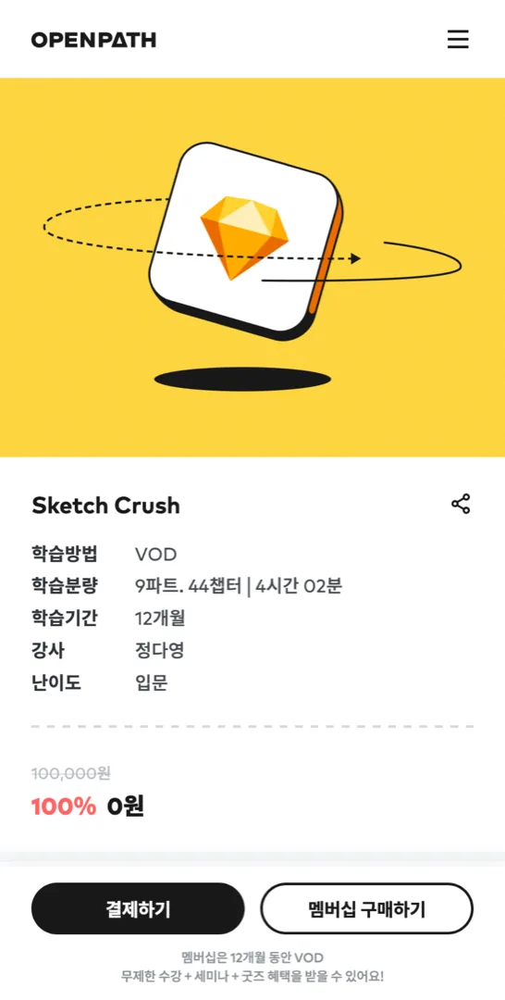

Case 04
듀오톤
Product ManagerDuotone
Product Manager
"무료 강의를 써본 사람이 결제한다"는
가설을 31일간 검증했습니다.“People who try a free lesson convert”:
a hypothesis I tested over 31 days.
Role
IT 디자인 교육 플랫폼 0→1
2023.06–12 · 기여도 60%Design edtech platform 0→1
2023.06–12 · 60% mine
*기여도 60%: 단독 그로스 PM으로 실험 가설·A/B 설계·데이터 분석을 주도, 구현·디자인은 6인 팀*60% — as sole Growth PM I drove the hypothesis, A/B design, and analysis; build and design by the team of 6
문제Problem
OPENPATH는 디자인 에이전시 듀오톤이 만든 IT 디자인 교육 플랫폼입니다. 여섯 명이 함께 만들었고, 저는 PM으로 론칭과 그로스를 맡았어요. 신규 서비스라 아는 사람이 없으니, 먼저 Meta 광고로 사람을 모았습니다. 들어오긴 했어요. 2023년 9월 2주 동안 2,550명. 그런데 대부분 그냥 나갔습니다.OPENPATH is an IT-design education platform built by Duotone, a design agency. A team of six built it; as PM, I owned the launch and growth. A brand-new service starts unknown, so we brought people in with Meta ads first. And they came: 2,550 over two weeks in Sep 2023. But most just left.
퍼널을 AARRR로 끊어 보니 막힌 곳은 유입이 아니라 그다음이었어요. 가입 전환 5%, 가입자의 결제 전환 1.6%. 트래픽을 더 사는 건 밑 빠진 독에 물 붓기였고, 진짜 풀어야 할 곳은 들어온 사람을 붙잡는 Activation 단계였습니다.Cutting the funnel with AARRR, the blockage wasn't acquisition; it was everything after: 5% sign-up, 1.6% of sign-ups paying. Buying more traffic was pouring water into a leaky bucket. The real thing to fix was Activation: holding the people who already arrived.

2,550
2023.09 · 2주간 유입Sep 2023 · 2 weeks
AARRR 퍼널 · 어디서 막혔나AARRR funnel · where it blocked
여정을 다섯 단계로 끊어 보면 막힌 곳이 보여요. 유입(Acquisition)은 충분했는데, 가입(Activation)에서 100명 중 95명이 새고, 결제(Revenue)까지 간 사람은 가입자의 1.6%였습니다.Cut the journey into five stages and the blockage shows itself: traffic was fine, but 95 of every 100 leaked at Activation, and only 1.6% of sign-ups reached Revenue.
가설Hypothesis
흔한 답은 '광고 소재를 더 잘 만들자'입니다. 하지만 클릭률은 이미 나쁘지 않았어요. 그래서 질문을 뒤집었습니다. 들어온 사람이 결제까지 안 가는 이유가 관심이 부족해서가 아니라, 제품을 충분히 겪어보지 못해서라면?The usual answer is “make better ads.” But click-through was already fine. So I flipped the question: what if people don't convert for lack of interest, but because they never really experienced the product?
무료 강의를 한 번이라도 들어본 사람은 가치를 머리로 이해한 게 아니라 몸으로 느꼈을 테니 결제로 이어질 거라고 봤습니다. 가설을 두 줄로 좁혔어요.Someone who takes even one free lesson has felt the value, not just understood it, so they should convert. I narrowed it to two claims.
실험: 31일 A/BExperiment: 31-day A/B
검증은 단순하게 설계했습니다. Meta 광고를 두 갈래로 나눠, 한쪽(A)은 일반적인 서비스 소개로, 다른 쪽(B)은 무료 강의 자체를 미끼로 유입을 받았어요. 2023년 10월, 31일간, 7,130명을 GA4 이벤트로 추적했고, 두 집단의 유일한 차이는 '제품을 먼저 경험했는가'였습니다.I kept the test simple. I split Meta ads two ways: group A entered through a standard service pitch, group B through the free lesson itself as the hook. 31 days, N=7,130 (Oct 2023), tracked via GA4. The only difference between the groups was whether they'd experienced the product first.
결과Impact
결과는 가설대로였습니다. 무료 강의를 거쳐 들어온 B 집단이 가입과 결제 모두 크게 앞섰어요.The result matched the hypothesis: group B, entering through the free lesson, led on both sign-up and payment.
결제 전환율은 방문자가 아니라 가입자 대비예요. 진단(9월)과 실험(10월)은 측정 기간이 다르고, 3.4배는 같은 10월 안의 A와 B를 비교한 값입니다.Payment conversion is measured against sign-ups, not visitors. The September diagnosis and the October test are separate windows; the 3.4× compares A and B within the same run.
'경험이 전환을 만든다'가 숫자로 증명된 거죠. 이 결과를 근거로 광고 소재와 무료 강의 동선(랜딩)을 다시 짰고, 네이티브 앱·OPEN WIKI·ALIVE CONTENT(영상 소재)로 이어 붙였습니다. 예산을 늘리는 대신, 같은 예산을 '경험을 먼저 주는' 쪽으로 옮긴 의사결정이었습니다."Experience drives conversion," proven in numbers. I used it to rebuild the ad creative and the free-lesson landing flow, then carried it into the native app, OPEN WIKI, and ALIVE CONTENT. The decision wasn't to spend more; it was to move the same budget toward giving people the experience first.